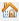

Start mit Elexis
Contents
Einführung
Die nachfolgende Anleitung gibt einen Überblick über die Funktionen, die mit Elexis bearbeitet werden.
Perspektive und Views
Der ganze Bildschirm mit den Fenstern wird "Perspektive" genannt. Je nach dem, welche Aufgabe sie durchführen möchten, gibt es eine geeignete Perspektive.

Vorgegebene Perspektiven finden Sie unterhalb der Menüleiste:

(1) Sind die Icons der Perspektiven
(2) Sind die Perspektiven in ausgeschriebener Form, bitte verwenden Sie vorwiegend diese
(3) Ist der aktuell angewählte Mandant. Rezept, AUF etc. werden über diesen Arzt ausgestellt.
Die einzelnen Fenster, werden auch ‚Views‘ genannt, sind alle frei platzierbar und ergeben zusammen die Perspektive.
Mit einem Doppelklick auf den Reiter einer View bzw. eines Fensters können sie dieses vergrössern. Erneuter Doppelklick führt wieder zur Ausgangslage.
Falls Sie sich verklickt haben und nicht mehr wissen, wie sie zurückkommen, verwenden Sie bitte das ‚Home‘-Icon  und/oder den Reset-Knopf  oben links.
oben links.
Wenn Sie eine View geschlossen haben und diese wieder öffnen möchten oder auch eine neue View suchen verwenden Sie bitte das ‚View öffnen‘ Icon  .
.
Tippen Sie entweder bei (1) den Namen der View ein, die Sie suchen oder klicken Sie sich durch die gewünschten Ordner.
Übersicht der wichtigsten Views:
Patientenübersicht
Patienten = Pat suchen
Pat Detail = Angaben zum Patienten eingeben
Parallelanzeige = Grafische Agenda mit Spalten
Fälle und Fall = Krankenkassen Eingaben
Konsultation = Eingabe für z.B. Heutige Konsultation
Konsultationen = Übersicht von allen Konsultationen
AUF = Arbeitsunfähigkeitszeugnisse
Medikationsliste = Fix-Medikamente und History des Patienten
Kompendium online = Kompendium
Briefe
Briefauswahl = Brief erstellen
Eingangsfach = Dokumente welche vom z.B. Scanner abgelegt werden müssen
Omnivore = Dokumente welche unter einem Pat abgelegt sind
Labor
Labor (Roche) = Laborverordnungen und Laboreingaben
Inbox = Laborwerte welche die Ärzte noch anschauen müssen
Adressen
Kontakte = Alle Kontakte (Ärzte usw.)
Details zum Kontakt = Details von allen Kontakten
Bestellungen
Artikelauswahl = unter Artikelstamm sind alle Medikamente drin und unter Eigenartikel kann man eigene Eingeben
Bestellung = kann man das ganze Bestellwesen abwickeln
Lager = Hier wird das ganze Lagersortiment angezeigt
Abrechnungen
Kons. nach Datum = Positionen suchen
Konsultationen zum verrechnen= Rechnungen kontrollieren und die Vorgeschlagenen Rechnungen können in die Rechnungsliste übermitteln werden
Rechnungsliste = Rechnungen suchen, stornieren oder ausdrucken
Rechnungsdetail = Rechnung in der Rechnungsübersicht anwählen und in dieser View genauer einsehen
Rechnungsübersicht = alle Rechnungen einsehen
ESR = Zahlungsdatei in das Elexis importieren
Patienten erfassen
Patient eingeben und suchen, falls nicht vorhanden grünes Plus

Je mehr Angaben erfasst werden, desto besser, es muss aber nicht zwingend alles ausgefüllt werden.
Patienten mit Covercard erfassen
Wählen Sie in der View Patienten das Covercard-Symbol.

Es öffnet sich der Dialog ‚Import von externen Daten‘, bitte setzen Sie nun die Covercard in den Leser ein. Die Abfrage erfolgt automatisch.
Bitte beachten Sie, dass der HIN Client für die Abfrage eingeschaltet und aktiv sein muss.
Patientendaten ändern
Änderungen können in der View ‚Patientendetail‘ gemacht werden. Um Änderungen durchzuführen muss zunächst der Blattschutz geöffnet werden.
Fälle eröffnen & ändern
Fall eröffnen via grünem Plus aus der Fälle View.

(1) Gesetz wählen
(2) Rechnungsempfänger wählen resp. Kontrollieren
(3) Versicherungsnummer eintragen
(4) Bestätigen mit ‚OK‘

Blau unterstrichene Schriftzüge öffnen die Adressauswahl.
Ein Doppelklick auf einen Fall öffnet dessen Details in der View ‚Fall‘. Änderungen können solange gemacht werden, bis eine Rechnung erstellt wurde. Anschliessend können nur noch Fakultative Felder geändert werden.
Konsultation eröffnen

(1) Grünes Plus eröffnet eine neue tagesaktuelle (2) Kons für den gewählten Fall (3) im unteren Bereich (4) kann Text eingegeben werden.

Medikament verrechnen
In der Konsultation auf ‚Verrechnung‘ klicken
In der View ‚Leistungen‘ zuerst auf den Reiter Artikelstamm wechseln (1)
Anschliessend nach Artikel oder Wirkstoff suchen (2)
Röntgen / Ultraschall / EKG Aufträge

(1) Patienten suchen
(2) Rechtsklick => GeräteDatenTräger (GDT)
(3) Stammdaten übermitteln

(1) Wählen Sie ‚Standard-Datei-Kommunikation‘ anhand des Pfads können Sie erkennen an welches Gerät die Daten geschickt werden. ACHTUNG: Nicht alle Computer verschicken an dasselbe Gerät!
(2) Bestätigen Sie mit ‚OK‘
(3) Anschliessend kann auf dem Gerät die Prüfung / Messung durchgeführt werden
(4) Bei EKG und Audiometrie wird ein PDF zurückgeliefert und im Omnivore abgelegt.
Etiketten drucken
Es stehen drei Etiketten zur Auswahl, Patientenetikette, Auftragsetikette und Adressetikette (v.l.n.r)
Dokumente erstellen
Arbeitsunfähigkeitszeugnis
{kind=link}
Grünes Plus erstellt ein neues AUF

Daten wählen, ggf. Prozentsatz und Grund der AUF anpassen. Bestätigen mit OK. Ausdrucken über Drucksymbol.
Überweisungsschreiben erstellen

(1) Patienten wählen
(2) Grünes Plus in der Briefauswahl
(3) Gewünschte Vorlage wählen
(4) Ggf. Adressat auswählen
(5) Dokument drucken
Externe Dokumente in Elexis
Externe Dokumente finden Sie in der View ‚Omnivore‘ (lat. Für Allesfresser). Sie sehen in der View immer die Dokumente des aktuell gewählten Patienten.

Labor erfassen / verordnen
Es gibt zwei Views auf denen das Labor eingesehen werden kann.
Um einen neuen Parameter eintragen zu können, muss dieser zunächst verordnet werden. Wählen Sie dazu das Icon (2).
Es öffnet sich die View für die Laborverordnung

(1) Zu erfassende Werte / Gruppen auswählen
(2) Verantwortliche Person (falls gewünscht)
(3) Bestätigen

(1) Die Verordnungen finden Sie oben rechts neben den Resultaten
(2) Die verordneten Werte öffnen
(3) Werte eintragen. WICHTIG: Enter aktiviert das Feld. Eintragen mit: (ENTER) Wert erfassen (ENTER) nächsten Wert erfassen etc.
Agenda
WICHTIG: In Elexis ist immer ein Patient angewählt. Alle Views aktualisieren sich auf diesen Patienten. Bei der Terminvergabe bedeutet das, dass Sie den Termin im Regelfall für den ak-tuell gewählten Patienten vergeben.
Es gibt 5 verschiedene Views der Agenda:
Agenda – Meist für Ärzte (nur ein Bereich wird angezeigt)
Agenda gross – tabellarische Übersicht über einen Bereich
Parallelanzeige – Grafische Übersicht aller Bereiche an einem Tag
Wochenanzeige – Grafische Übersicht eines Bereiches über eine Woche
Termine – zukünftige und vergangene Termine des aktuell gewählten Patienten
Termin vergeben
(1) Bereich wählen und (2) auf einen freien Zeitslot => rechte Maustaste => neuer Termin

(1) Zeitraum wählen (vorgeschlagen wird der erste freie Termin des Tages)
(2) Patient kontrollieren oder via ‚Freitext‘ oder ‚Kontakt auswählen‘ einen anderen holen
(3) Termintyp auswählen
(4) Grund eintragen und
(5) bestätigen
WICHTIG: Ist der Patient eingetroffen wird beim Grund am Anfang die Nummer aus dem Patientenleitsystem eingegeben.
Termin ändern
Doppelklick öffnet den Termin (1)

Beispiel: Termintyp geändert (1) Text ergänzt (2) und bestätigen (3)

Sofortrechnung erstellen
(1) Patient anwählen, in der View Fälle den Fall anwählen (2), dessen Konsultation abgerechnet werden soll. Rechte Maustaste => Rechnung erstellen (3).

Die erstellte Rechnungen finden Sie in der Abrechnungsperspektive.
Wählen Sie die Perspektive Abrechnungen (1) und anschliessend die View ‚Rechnungsliste‘. Stellen Sie sicher, dass Sie die ‚Offenen‘ (2) Rechnungen anzeigen und Aktualisieren (3) Sie ggf. die View. Über das Dreieck vor dem Patienten resp. dem Fall können Sie die Details anzeigen, bis Sie die Rechnung sehen. Wählen Sie die Rechnung an und gehen Sie mit Rechts-klick ins Menü (4). Wählen Sie Ausgeben um die Rechnung zu drucken.

Wählen Sie im Dialog ‚Als Tarmed-Rechnung ausdrucken‘ (1) an um die Rechnung auszugeben. Über die Checkboxen (2,3) kann eingestellt werden, welche Formulare ausgedruckt werden sollen. ESR = Einzahlungsschein, Rechnungsformular = Rückforderungsbeleg